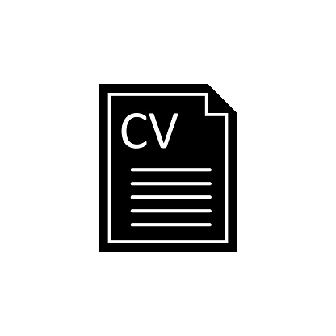

Accéder à mon Curriculum Vitae

Ma poursuite d'études
Ma période de stage m'a aidée à déterminer mon projet d'orientation.
Je sais désormais que j'aimerais utiliser mes compétences pour développer des solutions techniques.
Dans cette optique, je souhaite poursuivre mes études en master MIASHS qui se concentre sur des solutions techniques à destination de personnes en situation de handicap.
Année 2024-2025
Cette année, je suis en troisième année de BUT Informatique, à l'IUT de Villetaneuse (Université Sorbonne Paris Nord).
Enseignements suivis
Durant cette formation, j'ai suivi des cours de/d':
- Développement d'applications mobiles avec AndroidStudio
- Introduction à la manipulation de données avec Python
- Bases de données NoSQL (Redis, MongoDB)
- Outils DevOps (Jenkins, Gitlab, etc.)
- Qualité de développement
- Programmation Multimédia
- Virtualisation (Machines virtuelles, conteneurisation avec Docker, etc.)
- Communication
- Anglais B1+ vers B2
- Droit : étude du Code de la Propriété Intellectuelle
- Management d'une équipe Informatique
- Entrepreuneriat
Stage 2025 à la Maison des Examens
Je suis actuellement en période de stage de 16 semaines (4 mois) depuis le 17 mars 2025. Cette période se terminera le 04 juillet 2025.
Je suis intégrée à l'équipe de développement du SIEC (organisme qui gère les examens et concours d'Île-de-France) dans la ville d'Arcueil.
Mon projet de stage consiste à créer une application de gestion des comptes du personnel du SIEC, afin de faciliter cette tâche aux développeurs.
Cette application est développée sous le framework Symfony 7 (du langage PHP 8).
Appréhension du nouvel environnement
Pour appréhender ce nouvel environnement de travail, j'ai tenu à respecter les règles de l'entreprise dès le début du stage (ponctualité, alerter mon tuteur en cas de retard, ne pas divulguer d'informations confidentielles, etc.).
Je me suis également donné un cadre. J'ai mis en place une routine pour rester efficace. J'ai mis en place une checklist hebdomadaire pour suivre mon avancée sur le projet et j'ai tenu un carnet d'actions quotidiennes.
L'apprentissage des nouvelles technologies s'est effectué méthodiquement en suivant des cours en ligne pendant les deux premières semaines, en me créant un guide d'apprentissage personnel, où je répertorie tout ce que j'ai appris et que j'ai réutilisé pendant tout le stage, mais également en prenant des notes sur les attentes du projet et en posant des questions.
Par ailleurs, j'ai appréhendé cet environnement en suivant le mouvement et les habitudes existantes. Je salue toutes les personnes que je croise, je déjeune en même temps que ma division d'affectation au restaurant administratif, j'écoute ce qui se dit pour comprendre l'environnement et les enjeux auxquels mes "collègues" sont confrontés.
Différences avec l'IUT
J'ai trouvé que j'avais beaucoup plus de liberté pendant ma période de stage qu'habituellement à l'IUT. En effet, je devais gérer mes journées en autonomie (pause, temps pour mon rapport, temps pour le projet de stage, heure de fin de stage, etc.) et prendre l'initiative de solliciter des personnes.
Je n'étais pas surveillée tout le temps, et on me faisait confiance.
C'est un aspect qui m'a particulièrement marquée pendant mon stage.
Activités extra-cursus
Parallèlement à mes études, j'ai poursuivi mon parcours personnalisé au Conservatoire de Villepinte, avec les cours suivants:
- Accordéon
- Groupe d'accordéon
- Auditions et concerts tout au long de l'année
De plus, tout au long de l'année scolaire, j'ai participé à des ateliers d'écriture et d'expression orale en créole guadeloupéen et martiniquais.
J'ai appris à jouer du Gwo-ka, , un genre musical de la Guadeloupe, en autodidacte. Je maîtrise partiellement le woulé, le kaladja, le graj, le toumblak, le padjanbèl et l'un des mendé. Il me reste encore beaucoup d'expérience pour les maîtriser correctement.
Instagram de La Corde Urbaine
Par ailleurs, j'ai aidé à l'organisation et au bon déroulement d'un événement associatif (le repas du "Tanlanmèkannfènèg" du 17 mai 2025), en tant que bénévole.
Année 2023-2024
Durant cette formation, j'ai suivi des cours de/d':
- Développement d'applications mobiles avec AndroidStudio
- Développement web de sites dynamiques avec PHP, Node.js et Vue.js
- Bases de données (Formes Normales, Tableaux, etc.)
- Réseaux (VPN, Machines Virtuelles, gestion d'utilisateurs, chroot, etc.)
- Communication interne
- Anglais technique et d'entreprise
- Droit : étude du Code de la Propriété Intellectuelle
J'ai effectué un stage de 10 semaines du 22 janvier au 29 mars 2024 au sein de l'équipe de développement du Laboratoire d'Informatique de Paris Nord.
J'ai également participé à des cours d'espagnol et de Crossfit, proposés par l'USPN.
Parallèlement à mes études, j'ai poursuivi mon parcours personnalisé au Conservatoire de Villepinte, avec les cours suivants:
- Accordéon
- Groupe d'accordéon et piano
- Auditions et concerts tout au long de l'année
De plus, tout au long de l'année scolaire, j'ai fait partie de l'équipe de La Corde Urbaine, une entreprise musicale qui propose un pack complet à des artistes.
Cela concerne le coaching vocal, la réalisation de clips vidéos, mais également la communication et l'image de marque.
Instagram de La Corde Urbaine
Mes principales missions dans cette entreprise sont la création du site internet, le montage vidéo, et le conseil concernant le contenu audiovisuel émis par l'entreprise.
J'ai également été amenée à accompagner la cheffe d'entreprise pour auditionner deux artistes, identifier leurs besoins, et leurs attentes vis-à-vis de La Corde Urbaine.
Année 2022-2023
Durant cette formation, j'ai suivi des cours de/d':
- Développement Web (html, css, javascript)
- Programmation (Python, Java, C)
- Bases de données (Modèles relationnels, SQL, PL/pgSQL, psql, MariaDB)
- Introduction aux systèmes d'exploitation (Linux)
- Réseaux (table de routage, niveaux de réseaux, fonctionnement des mails SPAM, etc.)
- Architecture réseau (bits, encodage, etc.)
- Économie durable et numérique
- Communication
- Anglais technique et d'entreprise
- Gestion de projet
- Droit des contrats et du numérique
L'organisation de cette formation est similaire à celle du lycée.
L'évaluation en BUT se fait en continu, avec des contrôles sur table, des présentations orales, la participation en cours, et le rendu de projets appelés SAÉ
Pour valider l'année, la présence aux cours est obligatoire.
Pour en savoir plus sur le BUT Informatique, vous pouvez consulter:
J'ai également participé aux ateliers Street Art et Langue des Signes Française, proposés par l'USPN.
Parallèlement à mes études, j'ai poursuivi mon parcours personnalisé au Conservatoire de Villepinte, avec les cours suivants:
- Accordéon
- Groupe d'accordéon et piano
- Auditions et concerts tout au long de l'année
Année 2021-2022
Pendant cette année, j'ai suivi une formation de Parcours des Écoles d'Ingénieurs Polytech (Peip 1 A), à Polytech Sorbonne.
Voici les enseignements que j'y ai reçus:
- Mathématiques
- Mécanique
- Chimie
- Programmation (python, et C)
- Geosciences
- Anglais
L'organisation des enseignements est similaire à celle des licences.
La moitié des cours était donnée en amphithéâtre, sous forme de cours magistraux.
Tandis que la seconde moitié était sous forme de Travaux Pratiques, et de Travaux Dirigés.
J'ai réalisé un stage de découverte du monde professionnel, d'une durée d'un mois, dans l'entreprise de bâtiment Tradibat Cloisons, entre juin et juillet 2022.
Lien vers le site de Polytech Sorbonne:
Cliquez ici !
En dehors de cette formation, j'ai poursuivi les cours au Conservatoire de Villepinte,
j'ai suivi des cours de danse HipHop jusqu'en décembre 2021 et de danse GwoKa au Printemps 2022.
J'ai participé à un projet qui a mêlé danse et vidéo et qui a abouti à la réalisation d'un film complet dans lequel j'apparaîs :
Voir le film
Années lycée (2018 - 2021)
Ces années ont été particulièrement bousculées par le confinement dû à la pandémie de Coronavirus.
Terminale
Mes enseignements de spécialité de Terminale Générale sont les Mathématiques, et la Physique-Chimie, accompagnés de l'option Mathématiques expertes.
Mes 2 sujets de Grand Oral:
- Quels procédés chimiques sont utilisés dans la cuisine moléculaire ?
- Quels liens peut-on établir entre les sciences dures et la musique ?
Première
Mes enseignements de spécialité de Première Générale sont les Mathématiques, la Physique-Chimie, et l'Histoire des Arts.
Cette dernière m'a permis de participer à de nombreuses sorties culturelles, et un projet, avant le confinement.
Il s'agit également de l'année où j'ai commencé à prendre des cours de danse HipHop (Tinoschool).